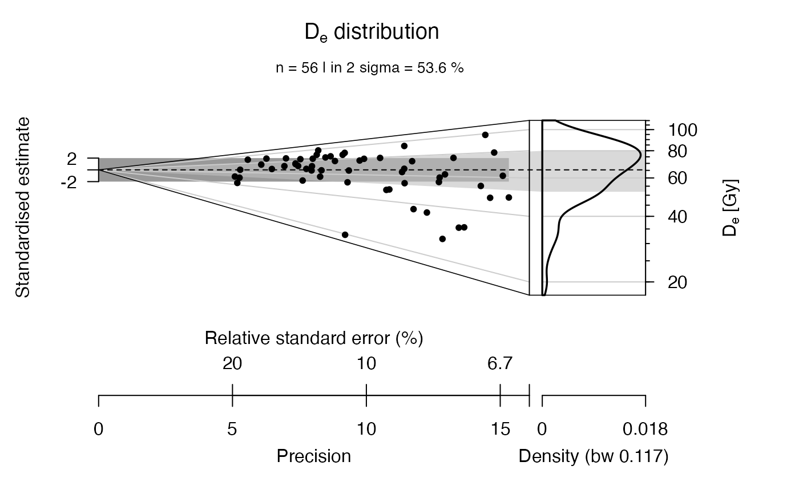

R/calc_AverageDose.R
calc_AverageDose.RdThis functions calculates the Average Dose and their extrinsic dispersion and estimates the standard errors by bootstrapping based on the Average Dose Model by Guerin et al., 2017
calc_AverageDose(
data,
sigma_m = NULL,
Nb_BE = 500,
na.rm = TRUE,
plot = TRUE,
verbose = TRUE,
...
)RLum.Results or data.frame (required):
for data.frame: two columns with De (data[,1]) and De error (values[,2])
numeric (required): the overdispersion resulting from a dose recovery experiment, i.e. when all grains have received the same dose. Indeed in such a case, any overdispersion (i.e. dispersion on top of analytical uncertainties) is, by definition, an unrecognised measurement uncertainty.
integer (with default): sample size used for the bootstrapping
logical (with default): exclude NA values from the data set prior to any further operation.
logical (with default): enables/disables plot output
logical (with default): enables/disables terminal output
further arguments that can be passed to graphics::hist. As three plots
are returned all arguments need to be provided as list,
e.g., main = list("Plot 1", "Plot 2", "Plot 3").
Note: not all arguments of hist are
supported, but the output of hist is returned and can be used of own plots.
Further supported arguments: mtext (character), rug (TRUE/FALSE).
The function returns numerical output and an (optional) plot.
-----------------------------------[ NUMERICAL OUTPUT ]
-----------------------------------RLum.Results-object
slot:@data[.. $summary : data.frame]
| Column | Type | Description |
| AVERAGE_DOSE | numeric | the obtained average dose |
| AVERAGE_DOSE.SE | numeric | the average dose error |
| SIGMA_D | numeric | sigma |
| SIGMA_D.SE | numeric | standard error of the sigma |
| IC_AVERAGE_DOSE.LEVEL | character | confidence level average dose |
| IC_AVERAGE_DOSE.LOWER | character | lower quantile of average dose |
| IC_AVERAGE_DOSE.UPPER | character | upper quantile of average dose |
| IC_SIGMA_D.LEVEL | integer | confidence level sigma |
| IC_SIGMA_D.LOWER | character | lower sigma quantile |
| IC_SIGMA_D.UPPER | character | upper sigma quantile |
| L_MAX | character | maximum likelihood value |
[.. $dstar : matrix]
Matrix with bootstrap values[.. $hist : list]
Object as produced by the function histogram
------------------------[ PLOT OUTPUT ]
------------------------
The function returns two different plot panels.
(1) An abanico plot with the dose values
(2) A histogram panel comprising 3 histograms with the equivalent dose and the bootstrapped average
dose and the sigma values.
sigma_m
The program requires the input of a known value of sigma_m,
which corresponds to the intrinsic overdispersion, as determined
by a dose recovery experiment. Then the dispersion in doses (sigma_d)
will be that over and above sigma_m (and individual uncertainties sigma_wi).
This function has beta status!
0.1.5
Christophe, C., Philippe, A., Kreutzer, S., 2022. calc_AverageDose(): Calculate the Average Dose and the dose rate dispersion. Function version 0.1.5. In: Kreutzer, S., Burow, C., Dietze, M., Fuchs, M.C., Schmidt, C., Fischer, M., Friedrich, J., Mercier, N., Philippe, A., Riedesel, S., Autzen, M., Mittelstrass, D., Gray, H.J., Galharret, J., 2022. Luminescence: Comprehensive Luminescence Dating Data Analysis. R package version 0.9.18. https://CRAN.R-project.org/package=Luminescence
Guerin, G., Christophe, C., Philippe, A., Murray, A.S., Thomsen, K.J., Tribolo, C., Urbanova, P., Jain, M., Guibert, P., Mercier, N., Kreutzer, S., Lahaye, C., 2017. Absorbed dose, equivalent dose, measured dose rates, and implications for OSL age estimates: Introducing the Average Dose Model. Quaternary Geochronology 1-32. doi:10.1016/j.quageo.2017.04.002
Further reading
Efron, B., Tibshirani, R., 1986. Bootstrap Methods for Standard Errors, Confidence Intervals, and Other Measures of Statistical Accuracy. Statistical Science 1, 54-75.
##Example 01 using package example data
##load example data
data(ExampleData.DeValues, envir = environment())
##calculate Average dose
##(use only the first 56 values here)
AD <- calc_AverageDose(ExampleData.DeValues$CA1[1:56,], sigma_m = 0.1)
#>
#> [calc_AverageDose()]
#>
#> >> Initialisation <<
#> n: 56
#> delta: 65.7939285714286
#> sigma_m: 0.1
#> sigma_d: 0.286159381384861
#>
#> >> Calculation <<
#> log likelihood: -19.251
#> confidence intervals
#> --------------------------------------------------
#> IC_delta IC_sigma_d
#> level 0.95 0.9500
#> CredibleIntervalInf 60.46 0.2175
#> CredibleIntervalSup 70.34 0.3951
#> --------------------------------------------------
#>
#> >> Results <<
#> ----------------------------------------------------------
#> Average dose: 65.3597 se(Aver. dose): 2.5528
#> sigma_d: 0.3092 se(sigma_d): 0.0476
#> ----------------------------------------------------------
##plot De and set Average dose as central value
plot_AbanicoPlot(
data = ExampleData.DeValues$CA1[1:56,],
z.0 = AD$summary$AVERAGE_DOSE)
